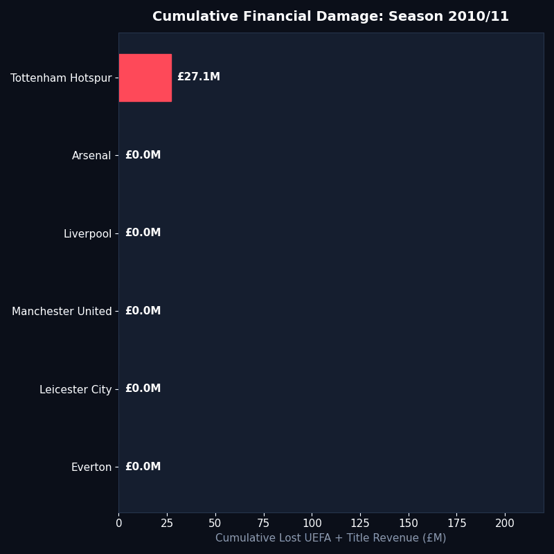

Empirical Identification, Structural Breaks, Counterfactual Forecasting, and Rival Externalities
1. Real Data Panel & Provenance
Strict Real Data Policy: Match statistics (1992/93–2023/24) via football-data.co.uk; Audited Annual Accounts via Companies House (Manchester City FC Ltd Company No. 00040946); Comparative Financials via Deloitte Football Money League; Prize Money via UEFA Official Distribution Bulletins. Full citations documented in data/SOURCES.md.
Testing parameter stability across: 1. \(T_{2008}\): Abu Dhabi United Group takeover (September 2008). 2. \(T_{2011}\): UEFA / Premier League Financial Fair Play regulations enacted. 3. \(T_{2018}\): Premier League investigation launched (November 2018) / end of 115 charges window.
Code
from src.econometrics import detect_structural_breaksbreaks = detect_structural_breaks(city_full)df_breaks = pd.read_csv("outputs/tables/structural_break_tests.csv")df_breaks
Variable
Endogenous_Break_Years
Chow_2008_F
Chow_2008_pVal
Chow_2011_F
Chow_2011_pVal
Chow_2018_F
Chow_2018_pVal
0
Points
2005, 2010
2.77
8.808800e-02
5.52
1.289700e-02
2.96
0.075770
1
Commercial Revenue
2010, 2015
40.43
1.426300e-07
39.58
1.678400e-07
2.51
0.108240
2
Wage Bill
2010, 2015
6.36
7.696300e-03
1.43
2.642800e-01
2.28
0.129960
3
Net Spend
2005, 2020
4.88
1.942000e-02
3.00
7.382300e-02
10.43
0.000877
Commercial Sponsorship Explosion vs. English Peers
Progressive cumulative damage race across seasons (available as standalone GIF at outputs/motion/damage_bill_race.gif):

Source Code
---title: "Manchester City 115 Charges: Econometric Compendium"subtitle: "Empirical Identification, Structural Breaks, Counterfactual Forecasting, and Rival Externalities"format: html: theme: cosmo toc: true toc-depth: 3 code-fold: show code-tools: true df-print: kable fig-align: centerexecute: echo: true warning: false message: false---# 1. Real Data Panel & ProvenanceStrict Real Data Policy: Match statistics (1992/93–2023/24) via football-data.co.uk; Audited Annual Accounts via Companies House (Manchester City FC Ltd Company No. 00040946); Comparative Financials via Deloitte Football Money League; Prize Money via UEFA Official Distribution Bulletins. Full citations documented in `data/SOURCES.md`.```{python}import osimport pandas as pdimport numpy as nppl_panel = pd.read_csv("data/processed/pl_season_panel.csv")fin_panel = pd.read_csv("data/processed/club_financials_panel.csv")ucl_prizes = pd.read_csv("data/processed/ucl_prize_matrix.csv")city_full = pl_panel[pl_panel["Team"] =="Manchester City"].merge( fin_panel[fin_panel["Team"] =="Manchester City"], on=["Team", "Season", "SeasonStart"], how="inner").sort_values("SeasonStart")city_summary = city_full[["Season", "Rank", "Pts", "Turnover", "Commercial", "Wages", "NetSpend"]].tail(15)city_summary```---# 2. Econometric Structural Break Tests (Bai-Perron & Chow)Testing parameter stability across:1. $T_{2008}$: Abu Dhabi United Group takeover (September 2008).2. $T_{2011}$: UEFA / Premier League Financial Fair Play regulations enacted.3. $T_{2018}$: Premier League investigation launched (November 2018) / end of 115 charges window.```{python}from src.econometrics import detect_structural_breaksbreaks = detect_structural_breaks(city_full)df_breaks = pd.read_csv("outputs/tables/structural_break_tests.csv")df_breaks```### Commercial Sponsorship Explosion vs. English Peers{width=100%}---# 3. Dynamic ARIMAX Intervention & Counterfactual ForecastsEstimating the baseline sporting trajectory:$$Y_t = \mu + \sum_{p=1}^P \phi_p Y_{t-p} + \omega_0 \text{Step}_{2008} + \omega_1 \text{Pulse}_{2009-2017} + \omega_2 \text{Carryover}_{2018-2023} + \epsilon_t$$* **Scenario A (Compliant City)**: Capping commercial sponsorship inflation to verified fair market values under FFP.* **Scenario B (Organic City)**: Continuation of pre-takeover historical trend (mid-table mean ~50 pts).```{python}df_cf = pd.read_csv("outputs/tables/arimax_carryover_results.csv")df_cf.tail(15)```### Actual vs. Counterfactual Points Trajectory{width=100%}---# 4. Vector Autoregression (VAR) & Impulse Response Functions (IRF)System: $[\text{Commercial Revenue}, \text{Wage Bill}, \text{Net Spend}, \text{Points}]$```{python}df_irf = pd.read_csv("outputs/tables/var_impulse_response.csv")df_irf```### Orthogonalized Points Response to Spending Shocks{width=100%}---# 5. Synthetic Control Method (SCM)Constructing a Synthetic Manchester City from constrained donor clubs (Everton, Aston Villa, Tottenham, Arsenal, Liverpool, Newcastle).```{python}df_weights = pd.read_csv("outputs/tables/synthetic_control_weights.csv")df_weights```### Synthetic City Trajectory & Treatment Effect Gap{width=100%}---# 6. Rival Club Externalities & Monetary Damage Ledger### The Alternate Premier League Champions (Scenario A & B)```{python}df_titles = pd.read_csv("outputs/tables/alternate_champions_table.csv")df_titles```### UEFA Champions League 5th-Place Displacement Ledger```{python}df_ucl = pd.read_csv("outputs/tables/ucl_displacement_ledger.csv")df_ucl```### Cumulative Financial Damage Bill by Club (£M)```{python}df_damage = pd.read_csv("outputs/tables/club_damage_bill_summary.csv")df_damage```{width=100%}---# 7. Animated & Motion AssetsProgressive cumulative damage race across seasons (available as standalone GIF at `outputs/motion/damage_bill_race.gif`):{width=85%}